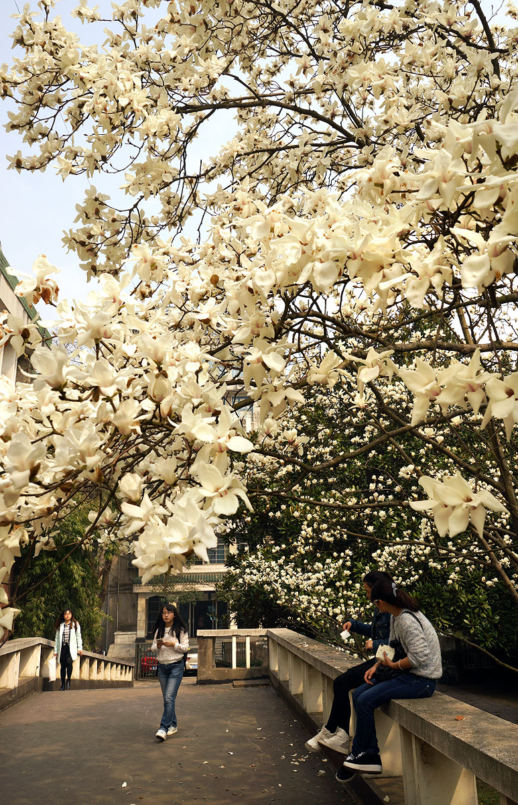
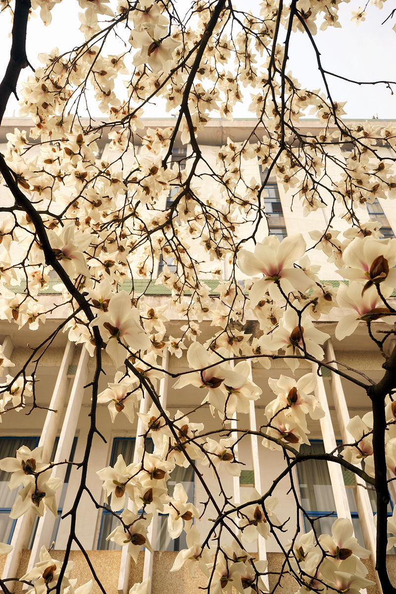
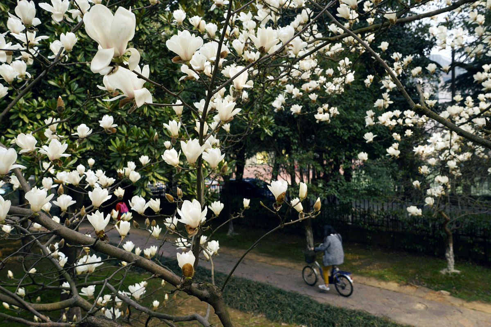
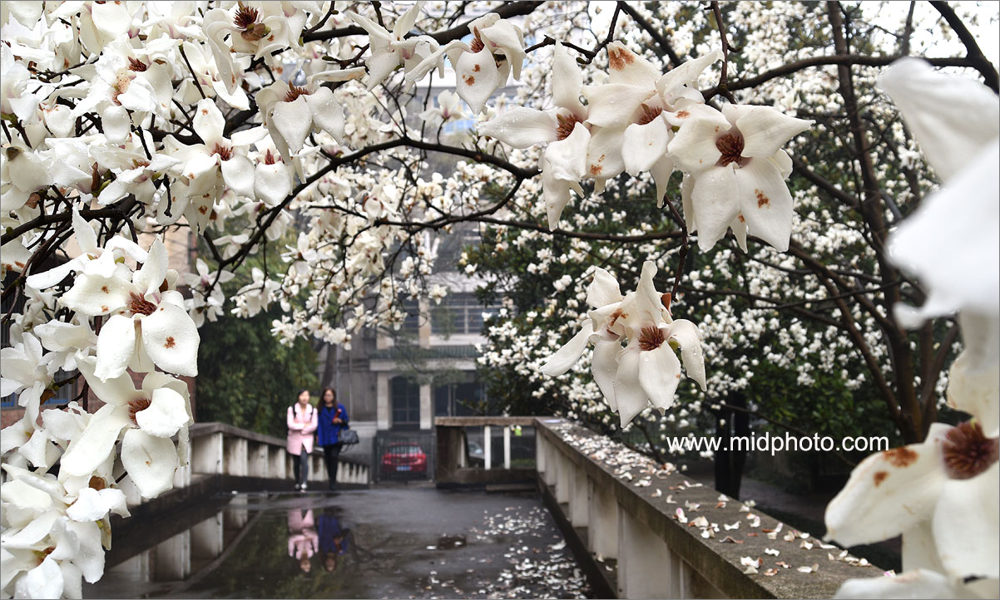
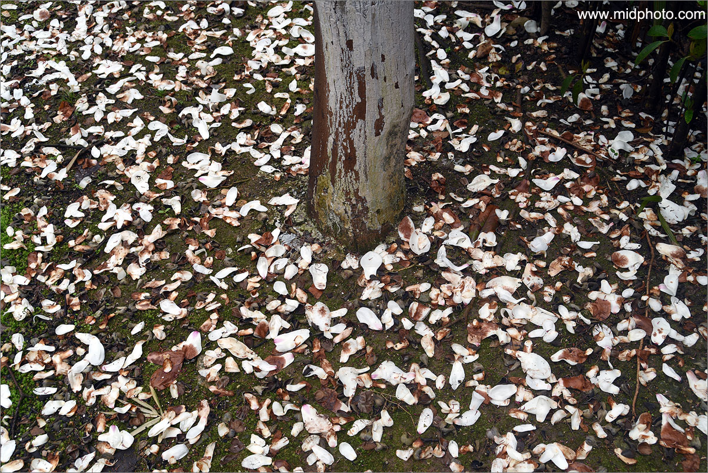
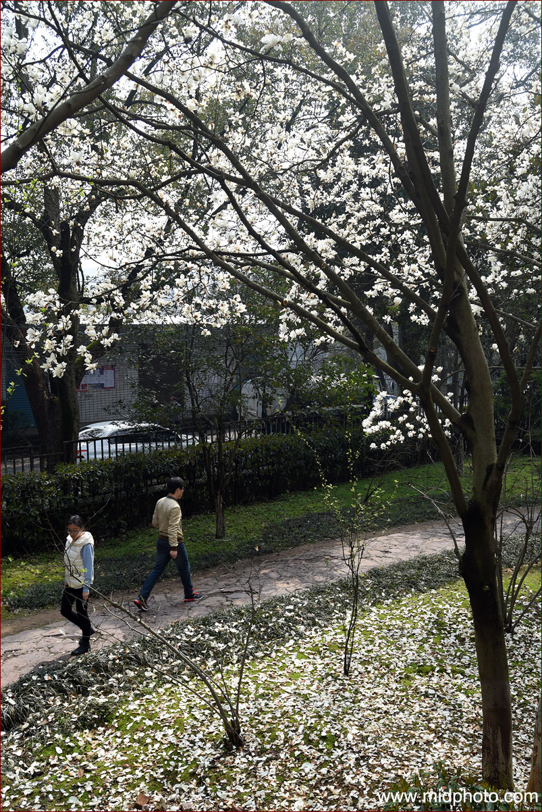
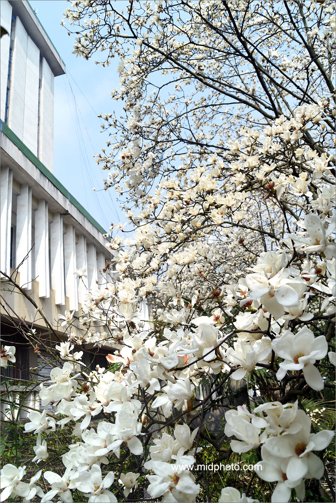
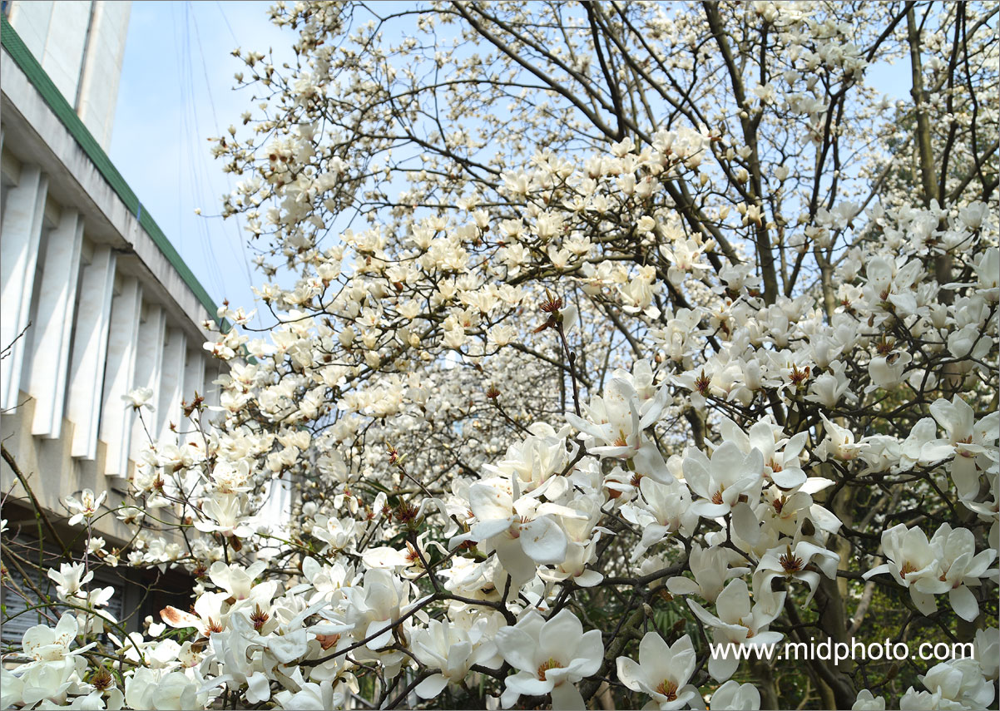
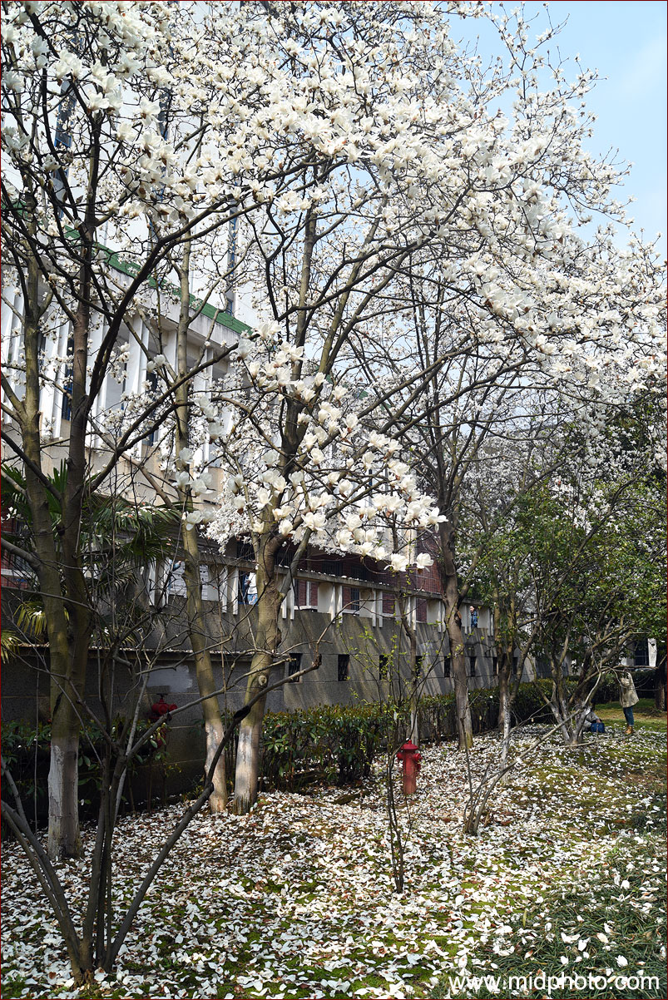

老杨摄影系列（13）
湖南大学图书馆的玉兰花开了
by 长沙杨飞
昨天领导说图书馆需要几张春天来了的图片，我就到院子里拍了一圈。这些年我一直是纪实为主，花花草草很久没拍过了。回来一看，所有的图片都发黄，这台索尼A7的白平衡坑爹啊，我偷懒没用RAW原始格式，颜色怎么也调不正。用是最便宜的索尼FE28-70套头，不知怎么回事镜头也出故障，机身老提示无镜头，真是抓瞎了。下面这些发黄的图片都是这台索尼机拍的。
老图书馆一角

老图书馆

老图书馆门口的樱桃树

图书馆主楼的樱花没开，我大失所望，但这几棵木兰花开了。难道这就是传说中的索尼黄？


这是图书馆主楼 ，颜色跑得一塌糊涂。这难道是传说中的民国怀旧色系？

调了半天，这张颜色勉强能看了

今天上午我拿了一台尼康D750来，白平衡非常准确，但是昨晚下了一夜的雨，木兰花已被雨打风吹去

各路美女都来赏花了

大部分花都被雨水摧残了，好不容易找到一朵全的，来张特写

落叶缤纷，可以拍古装戏了

一个小水坑
有人在图书馆草地上采摘野菜，这就是传说中有明目作用的马兰

帅哥们也来了

黄雀在后

心事男女，脚步匆匆

图书馆主楼

图书馆主楼2

图书馆主楼3

特写

特写2

特写3

一拖三

栏杆上的两片落叶。这是我最满意的一张。
汇报完毕。以上特写用的是尼康最便宜的一支长焦镜头70-300G，550元买的二手。其他颜色正常的图片是尼康28-80G镜头所拍，这也是一支二手货，只要300元，便宜到笑，已有十二年陈，镜片里面都起霉了，但成像依然不错。此镜头外号人称土狗，便宜又好用，全塑料结构，连镜头卡扣都是塑料的，尼康的省钱大法真是令人发指，不过好处之一就是特别轻便，只有一百多克。前个月它的塑料卡扣还断了一个，我用万能胶粘上，依然能用，哈哈。
杨飞，2016年3月4日，长沙
----------------------------------
关注老杨作品：
1，杨飞摄影 www.midphoto.com
2，微信：yangfei789288
3，微信公众号：长沙杨飞
4，新浪微博@长沙杨飞
5，推特Twitter@feiyang17
6，Facebook：yangfei999999@hotmail.com
-----------------------------------------